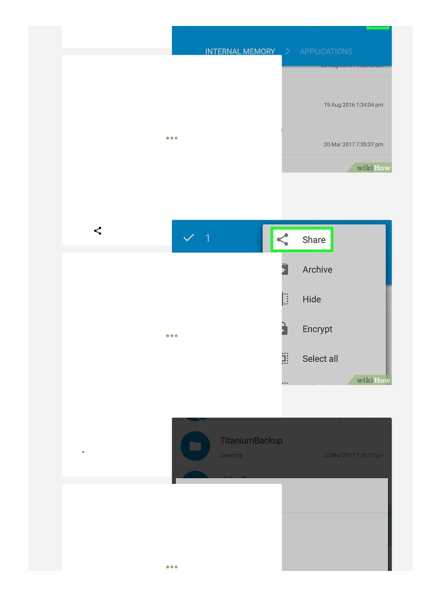

controls whether it is copied (false) or moved (true). By default, this
is enabled by alt-clicking on Mac OS, and ctrl-clicking elsewhere.
lineWrapping: boolean
Whether CodeMirror should scroll or wrap for long lines. Defaults to
false
(scroll).
lineNumbers: boolean
Whether to show line numbers to the left of the editor.
firstLineNumber: integer
At which number to start counting lines. Default is 1.
lineNumberFormatter: function(line: integer) → string
A function used to format line numbers. The function is passed the line
number, and should return a string that will be shown in the gutter.
gutters: array<string | {className: string, style: ?string}>
Can be used to add extra gutters (beyond or instead of the line
number gutter). Should be an array of CSS class names or class name
/ CSS string pairs, each of which defines a
width
(and optionally a
background), and which will be used to draw the background of the
gutters.
May include the
CodeMirror-linenumbers
class, in order to
explicitly set the position of the line number gutter (it will default to be
to the right of all other gutters). These class names are the keys
passed to
setGutterMarker
.
fixedGutter: boolean
Determines whether the gutter scrolls along with the content
horizontally (false) or whether it stays fixed during horizontal scrolling
(true, the default).
scrollbarStyle: string
Chooses a scrollbar implementation. The default is
"native"
, showing
native scrollbars. The core library also provides the
"null"
style,
which completely hides the scrollbars.
Addons
can implement
additional scrollbar models.
coverGutterNextToScrollbar: boolean
When
fixedGutter
is on, and there is a horizontal scrollbar, by
default the gutter will be visible to the left of this scrollbar. If this
option is set to true, it will be covered by an element with class
CodeMirror-gutter-filler
.
inputStyle: string
Selects the way CodeMirror handles input and focus. The core library
defines the
"textarea"
and
"contenteditable"
input models. On
mobile browsers, the default is
"contenteditable"
. On desktop
browsers, the default is
"textarea"
. Support for IME and screen
readers is better in the
"contenteditable"
model. The intention is to
make it the default on modern desktop browsers in the future.
readOnly: boolean|string
This disables editing of the editor content by the user. If the special
value
"nocursor"
is given (instead of simply
true
), focusing of the
editor is also disallowed.
screenReaderLabel: string
This label is read by the screenreaders when CodeMirror text area is
focused. This is helpful for accessibility.
showCursorWhenSelecting: boolean
Whether the cursor should be drawn when a selection is active.
Defaults to false.
lineWiseCopyCut: boolean
When enabled, which is the default, doing copy or cut when there is no
selection will copy or cut the whole lines that have cursors on them.
pasteLinesPerSelection: boolean
When pasting something from an external source (not from the editor
itself), if the number of lines matches the number of selection,
CodeMirror will by default insert one line per selection. You can set this
to
false
to disable that behavior.
selectionsMayTouch: boolean
Determines whether multiple selections are joined as soon as they
touch (the default) or only when they overlap (true).
undoDepth: integer
6
7
Tap
.
It's in the top-right corner of the screen.
8
Tap a share option.
In most cases, the APK file will be larger than is ideal for
sending via email, so you'll likely need to choose a cloud service (such as Google
Drive).
For example, if you want to send the APK file to Dropbox and you have the
Dropbox app installed on your Android, you'd tap
Dropbox
and then tap
Add
to
upload the APK.
{kind=link}
{kind=link}